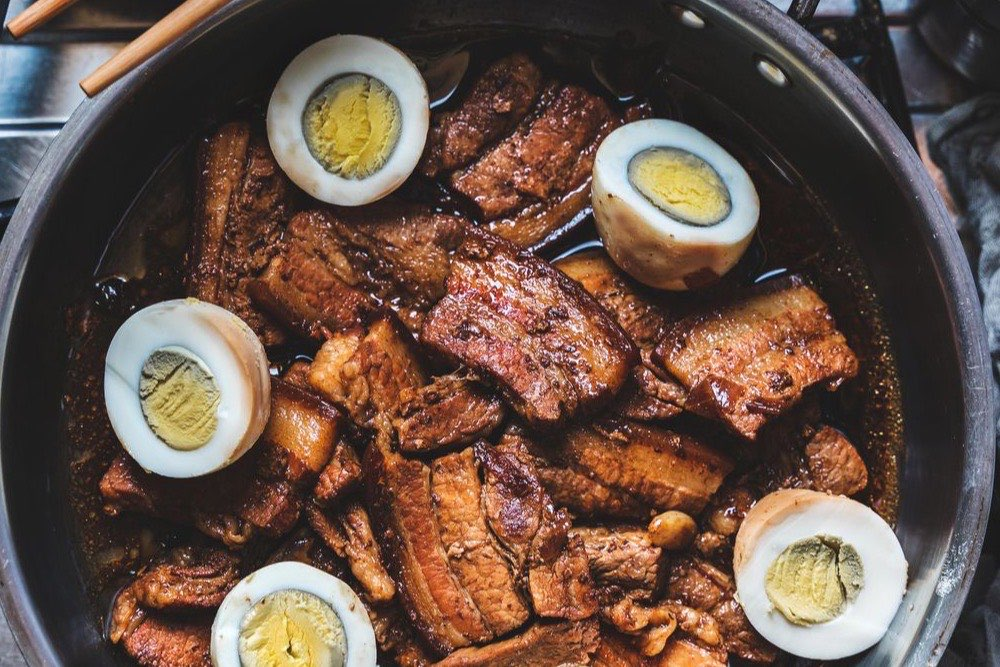

Filipino Chicken Adobo
The Philippines' unofficial national dish — soy, vinegar, garlic, and patience

Adobo is the dish most Filipinos learn first and argue about forever. At its heart it is astonishingly simple: meat braised in vinegar and soy sauce with garlic, bay leaves, and peppercorns. The vinegar preserves and brightens, the soy deepens, and slow simmering turns the two into a glossy, savory-sour sauce. There is no single correct adobo — this is a reliable, everyday version you can make your own.
Ingredients
- 1 kg chicken thighs and drumsticks
- 1/2 cup soy sauce
- 1/2 cup white or cane vinegar
- 1 whole head garlic, crushed
- 3 dried bay leaves
- 1 tsp whole black peppercorns
- 1 cup water
- 2 tbsp cooking oil
- 1 tbsp brown sugar (optional)
Instructions
- Marinate the chicken in the soy sauce and crushed garlic for at least 30 minutes.
- Heat the oil in a pot over medium-high heat and brown the chicken on all sides. Set the marinade aside — do not discard it.
- Pour in the reserved marinade, vinegar, water, bay leaves, and peppercorns. Let it come to a boil WITHOUT stirring, so the raw sharpness of the vinegar cooks off.
- Lower the heat, cover, and simmer for 30 to 40 minutes, until the chicken is tender and the sauce has deepened.
- Uncover, stir in the brown sugar if using, and let the sauce reduce until slightly thick and glossy. Serve hot over steamed rice.
Cook's tip: Every Filipino family has its own adobo. Add a splash of coconut milk for a richer adobo sa gata, or extra vinegar for a sharper, Batangas-style bite. Adobo also tastes better the next day, once the flavors settle.
Curious which Filipino dish matches your personality? Take the Pinoy Food Personality Test or browse the full Filipino Food Guide.